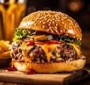

<link href="https://cdn.jsdelivr.net/npm/bootstrap@5.3.3/dist/css/bootstrap.min.css" rel="stylesheet"
    integrity="sha384-QWTKZyjpPEjISv5WaRU9OFeRpok6YctnYmDr5pNlyT2bRjXh0JMhjY6hW+ALEwIH" crossorigin="anonymous">
	
<style>
        .card {
            position: relative;
            overflow: hidden;
            transition: transform 0.3s ease, box-shadow 0.3s ease;
			cursor:pointer
			border
        }

        .card:hover {
            transform: translateY(-5px);
            box-shadow: 0 0 20px rgba(0, 0, 0, 0.1);
        }
        .card:hover .card-body {
            transform: translateY(0);
            opacity: 1;
        }
		.hvr-underline-from-left {
			display: inline-block;
			vertical-align: middle;
			-webkit-transform: perspective(1px) translateZ(0);
			transform: perspective(1px) translateZ(0);
			box-shadow: 0 0 1px rgba(0, 0, 0, 0);
			position: relative;
			overflow: hidden;
		}
		.card:hover {
            transform: scale(1.05);
            box-shadow: 0 4px 8px rgba(0, 0, 0, 0.2);
        }
		.card {
            transition: transform 0.3s, box-shadow 0.3s;
        }
		h2:hover {
             background-color: yellow;
			 }
        @keyframes pulseText {
            0% {
                transform: scale(1);
            }
            50% {
                transform: scale(1.1);
            }
            100% {
                transform: scale(1);
            }
        }
        .animated-text {
            animation: pulseText 2s infinite;
        }
    </style>

<section class="container">
    <div class="py-5">

        <div class="row">
            <div class="col-md-6">
                <h2 class="mb-3 text-center animated-text">Fast Foods</h2>
                <h3 style="text-align: center;">Top Three Favoraties</h3>
                <div class="mb-4 text-center">
                    <p>Fast food is a type of mass-produced food designed for commercial resale, with a strong priority placed on speed of service.
					It is a commercial term, limited to food sold in a restaurant or store with frozen,
					preheated or precooked ingredients and served in packaging for take-out/takeaway</p>
                </div>
            </div>
            <div class="col-md-6">
                <div class="row d-flex">
                    <div class="col">
                        <div class="card bg-light rounded-pill my-3 p-3">
                            
                            <div class="card-body">
                                <h3 class="card-title">Burger</h3>
                                <div class="pb-1 text-muted">
                                    <p>A hamburger, or better known as a burger, 
									     is a food consisting of fillings—usually a patty of ground meat,
										 typically beef—placed inside a sliced bun or bread roll.
                                    </p>
                                </div>
                                <div class="d-flex">
                                    <a href="https://dev.erp.apnasite.in/" class="text-dark text-decoration-none"></a>
                                </div>
                            </div>
                        </div>
                    </div>
                    <div class="col">
                        <div class="card bg-light rounded-pill my-3 p-3">
                            
                            <div class="card-body">
                                <h3 class="card-title">Noodles</h3>
                                <div class="pb-1 text-muted">
                                    <p>Noodles are a type of food made from unleavened dough which is either rolled flat and cut, 
									stretched, or extruded, into long strips or strings.
                                    </p>
                                </div>
                                <div class="d-flex">
                                    <a href="https://dev.erp.apnasite.in/" class="text-dark text-decoration-none"></a>
                                </div>
                            </div>
                        </div>
                    </div>
                    <div class="col">
                        <div class="card bg-light rounded-pill my-3 p-3">
                            
                            <div class="card-body">
                                <h3 class="card-title">Pasta</h3>
                                <div class="pb-1 text-muted">
                                    <p>Pasta is a type of noodle that's traditionally made from durum wheat, water or eggs.
									It is formed into different noodle shapes and then cooked in boiling water.</p>
                                </div>
                                <div class="d-flex">
                                    <a href="https://dev.erp.apnasite.in/" class="text-dark text-decoration-none"></a>
                                </div>
                            </div>
                        </div>
                    </div>
                </div>
            </div>
        </div>
    </div>
</section>